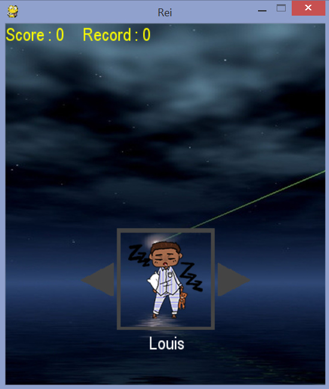

Nous, groupe 1 d'ISN, avons décidé de réalisé un projet dont, cette page, l'ensemble des pages liées et les jeux proposés, constitue l'ensemble qu'est ce projet.
Rei

Jeu d'esquive ou il suffit d'aller à gauche ou a droite à l'aide des touches directionnelles pour bouger.
Touche :
-Espace : séléction du personnage / retour à l'écran de sélection des personnages après une défaite,
-Gauche et droite : changer de personnage / esquiver.